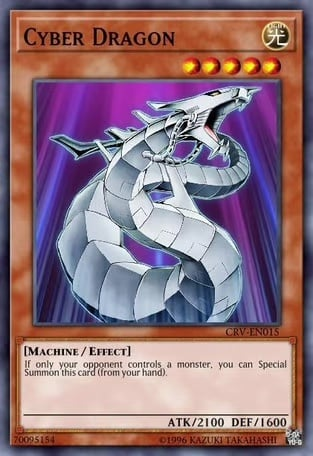
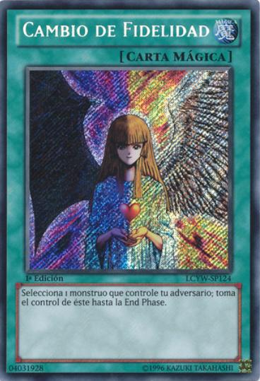

este tipo de cartas son las mas comunes en el juego junto con
las efecto que veremos mas adelante, estas cartas se caracterizan
por su dintintivo color tierra al rededor de la carta y por el echo de
no tener efecto alguno.

CARTA DE EFECTO
este tipo de cartas como ya se mneciono son de las mas comunes
dentro del juego y no se diferencian de las normales salvo por el echo de que estas
si tienen efectos que ayudan al jugador y en algunos casos tienen mas de un efecto y tambien se pueden
identificar por su color tierra mas fuerte que el de la normal

CARTAS MAGICAS
este tipo de cartas se caracteriza por su color agua marina pero tambien
pueden identificarse por
sus efectos ya que estas cartas solo tienen efectos de uso no de varioas tipos
como serian las siguientes cartas magicas
de juegos rapido, de campo, de equipo, y continuas
CARTAS DE TRAMPA
este tipo de cartas son muy parecidas a las cartas magicas solo con el cambio de
su color a un morado intenso y con el efecto de que solo pueden ser activadas despues de
tu turno y tiene las misma variantes ya dichas con las cartas magicas
juegos rapido, de campo, de equipo, y continuas
CARTAS XYZ (EXCEDIDAS)
este tipo de cartas presenta un cambio al modo de juegon normal devido a que para invocar esta carta
se necesitas 2 o mas monstruos con el mismo nivel y despues esta carta tomara esoso mosntruos como materiales
para poder activar susu efectos y si contorno es totalmente negro con toques como galacticos
CARTAS SINCRONIA
este tipo de cartas presenta un cambio al modo de juegon normal devido a que para invocar esta carta
se necesitas 2 o mas monstruos con distinto o el mismo nivel que sumandolos den el nivel del monstruo
y dentro de esos monstruos que se utiliza para invocarlo debe haber un monstruo "cantante" y tambien el color de su carta cambia
a un blanco marfil
CARTAS LINK
este tipo de cartas presenta un cambio al modo de juegon normal devido a que para invocar esta carta
se necesitas la cantidad de montruos que la carta solicite con el numero de flechas
sin importar el nivel de los monstruos y tambien el cambio de color que presenta
es un tono mas azul rey
CARTAS FUSION
este tipo de cartas presenta un cambio al modo de juegon normal devido a que para invocar esta carta
se necesitas seguir las indicaciones que te da la carta en canto
a monstruos y demas requisitos pero tambien es necesario tener una carta magica de fusion
para poder fusionar y su color en la carta cambia a un morado casi fuccia
CARTAS RITUAL
este tipo de cartas presenta un cambio al modo de juegon normal devido a que para invocar esta carta
se necesitas seguir las indicaciones que te da la carta en canto
a monstruos y demas requisitos pero tambien es necesario tener una carta magica
especofica de ritual para poder invocar al monstruos y su color de
carta cambia a un azul cielo